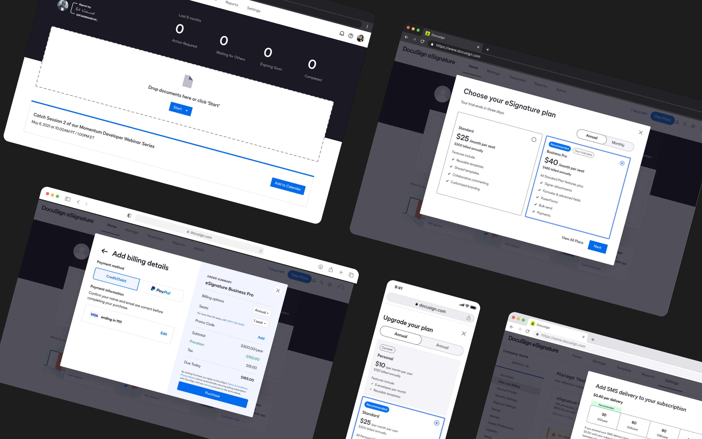
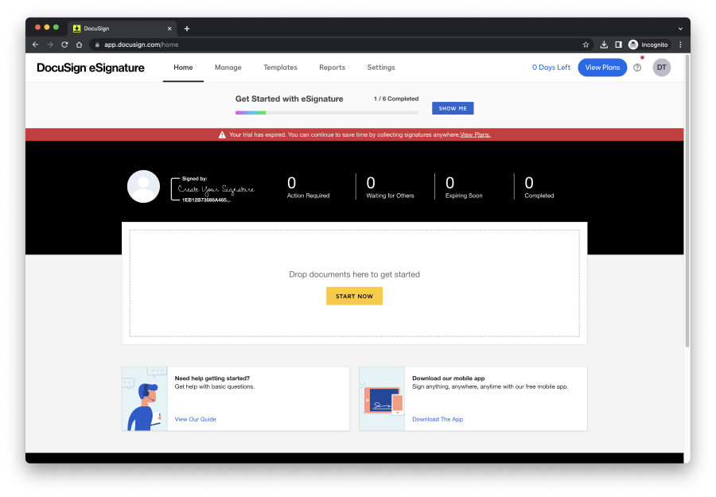
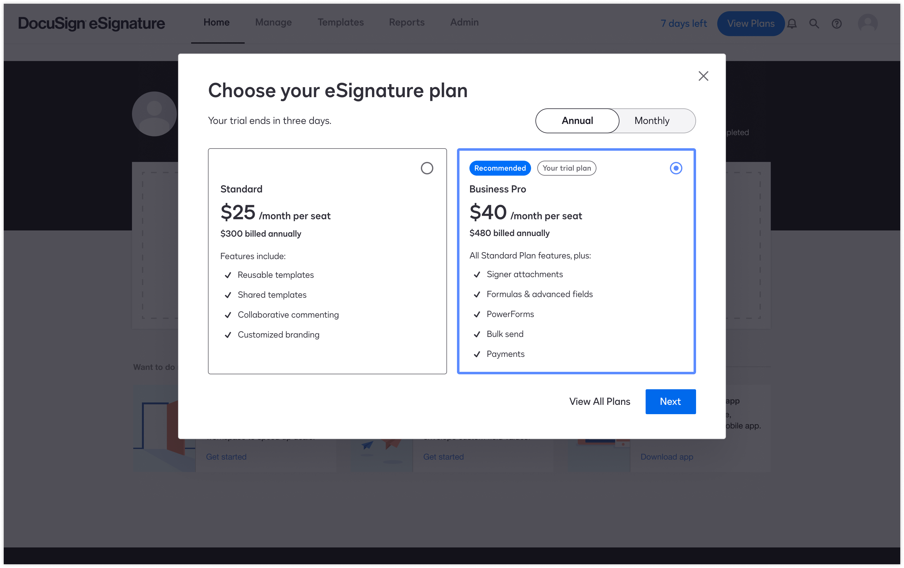

Docusign In-Product Growth
Overview
Design experiments to improve in product upgrade and add-on attachment

Role
As the solo lead designer on the team, I collaborated with product managers on the design vision and MVP, conducted research with user researchers, and aligned with product marketing, content, legal, and product leaders on design directions and iterations.
Given the high traffic and payment volumes of in-product transactions on expansion side, I also collaborated with the accessibility team to ensure the flow was accessible to all users.
Target Audience
Our target users are typically individuals who either make purchase decisions or influence them. They may be admins for their teams and could be Docusign users or non-users. (Depending on where you enter the flow)


#1 Experiment
In Product Plan Recommendation
Docusign customers spent a lot of time in the product sending documents for signature, preparing documents and analyzing results. People choose to upgrade when they feel like they need more powerful features, or when they reach their document sending limitation. Currently users go to a whole page contains of all the plans, then choose a plan they want to upgrade to.
Users can access the upgrade plan experience from the home page, within the product while preparing a document, and on the settings page. The plans and pricing page provides users with a comprehensive view of all our SKUs, a full feature comparison, and a Q&A section.
Our hypothesis... By offering a personalized, simplified, in-context plan recommendation experience when users are looking to upgrade, we can reduce friction and increase trial-to-paid conversions.
Goal Metric
We primarily monitor the conversion rate once users indicate their intent to upgrade, along with the Average Selling Price, time to complete checkout, and ultimately the impact on Monthly Recurring Revenue (MRR). We also track purchase error rates, upgrade error rates, and plan cancellations as indicators of whether the upgrade experience is effective.
Process
The end-to-end process took one month for design iteration and research. The team had to pivot midway to launch the plan recommendation step of the experiment initially to expedite the development timeline (without the checkout modal).
Experiment Result
The team conducted A/B testing over three weeks. The experiment concluded with a 15.3% improvement in purchase conversion rate, resulting in an additional ~$500k in NewCo MRR. Although we did not have the checkout out in the experiment, we anticipate that there will be a significant lift once we redesign a more streamlined in-product checkout experience.
#2 Pre-post
Self-service Add-on
As DocuSign expands its offerings beyond eSignature, features like SMS delivery and identity verification have proven to be highly valuable for customers' businesses. Previously, customers needed to contact sales to purchase these capabilities as add-ons. This initiative aims to provide users with a self-serve option to purchase add-ons when subscribing to a new plan, as well as empower users to trial add-ons directly within the product.
By offering a personalized, simplified, in-context plan recommendation experience when users are looking to upgrade, we can reduce friction and increase trial-to-paid conversions.
Goal Metric
The team tracked purchases and trials as primary metrics to measure add-on adoption. Since we were enabling free trials on the product's Send page, we also monitored product metrics to ensure the product experience isn't compromised.
Process
The add-on project involved multiple designers and interfaces, including the plan and pricing page, checkout, trial conversion, and settings page. I was responsible for connecting the in-product experience across these various touchpoints.
Experiment Result
By November, 56.3% of digital paid customers (~500k users) had unlocked the SMS delivery trial. The SMS delivery expansion contributed to a 53% week-over-week increase.
Overall, expansion metrics (plan upgrades, seats, and envelopes) grew 30% year-over-year. However, plan upgrades alone decreased by 12% year-over-year, indicating that there may be other issues or value gaps from the user's perspective that we haven't fully identified.